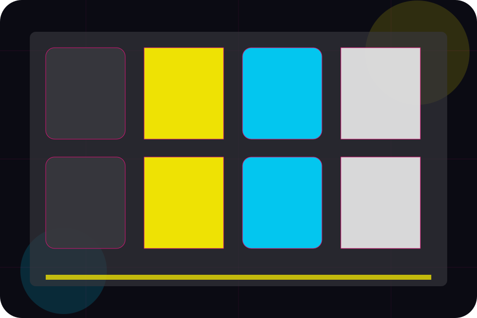
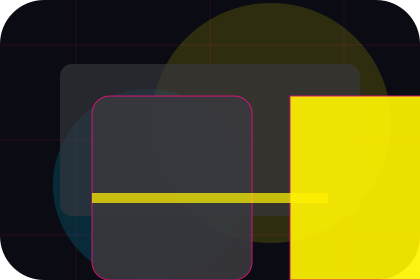
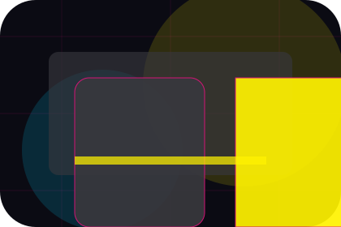
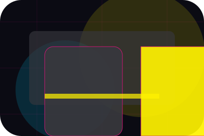
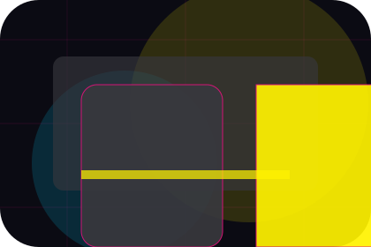
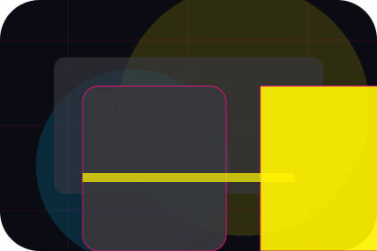
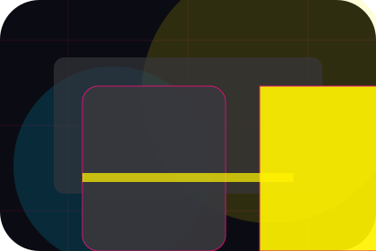
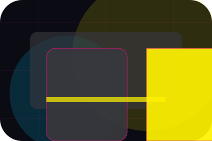
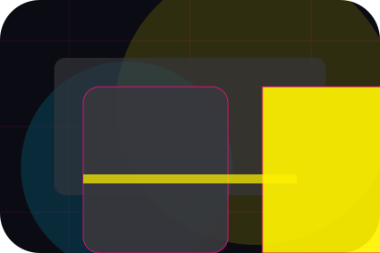
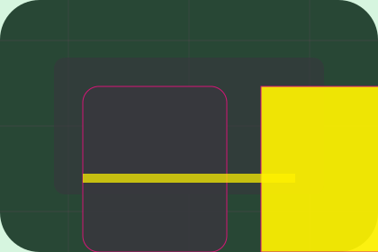

FAQ / 01
FAQ by Wave
FAQ shaped for media, broadcasting & digital content decisions.
FAQ opens as a clear media decision hub: what Wave offers, who it helps, why it matters, and which route to take first.
The first screen combines positioning, proof, primary action, and fast internal navigation, so people can act immediately or compare the rest of the faq route with context.
Media scopeCompare optionsRequest advice
Angular media hero
Filter the schedule
Select the closest route and Wave keeps the next step, proof, and follow-up expectation aligned with audience reach and timing.

FAQ / 02
Access
Access handles buying doubts directly so visitors can understand timing, fit, limits, and the safest next step.
Answers are short by design: enough to remove hesitation, not so much that the page turns into documentation before the visitor can act.
Explore FAQ
Question
Access gives the page a specific angle instead of repeating the navigation label.

Answer
The angled story cards show what to compare, what to avoid, and what matters most for media, broadcasting & digital content visitors.

Next Step
The final cue points to a useful internal route so the section keeps the journey moving.
FAQ / 03
Submissions
Submissions handles buying doubts directly so visitors can understand timing, fit, limits, and the safest next step.
Answers are short by design: enough to remove hesitation, not so much that the page turns into documentation before the visitor can act.
Explore FAQQuestion
Submissions gives the page a specific angle instead of repeating the navigation label.
Answer
The angled story cards show what to compare, what to avoid, and what matters most for media, broadcasting & digital content visitors.

Next Step
The final cue points to a useful internal route so the section keeps the journey moving.
FAQ / 04
Advertising
Advertising handles buying doubts directly so visitors can understand timing, fit, limits, and the safest next step.
Answers are short by design: enough to remove hesitation, not so much that the page turns into documentation before the visitor can act.
Explore FAQWave structures advertising around question, answer, and a clear next route so visitors can compare the block quickly before they advertise with the team.
Advertise With UsFAQ / 05
Rights
Rights handles buying doubts directly so visitors can understand timing, fit, limits, and the safest next step.
Answers are short by design: enough to remove hesitation, not so much that the page turns into documentation before the visitor can act.
Explore FAQQuestion
Rights gives the page a specific angle instead of repeating the navigation label.

Answer
The angled story cards show what to compare, what to avoid, and what matters most for media, broadcasting & digital content visitors.

Next Step
The final cue points to a useful internal route so the section keeps the journey moving.
FAQ / 06
Accounts
Accounts handles buying doubts directly so visitors can understand timing, fit, limits, and the safest next step.
Answers are short by design: enough to remove hesitation, not so much that the page turns into documentation before the visitor can act.
Explore FAQQuestion
Accounts gives the page a specific angle instead of repeating the navigation label.
FAQ / 07
Usage
Usage handles buying doubts directly so visitors can understand timing, fit, limits, and the safest next step.
Answers are short by design: enough to remove hesitation, not so much that the page turns into documentation before the visitor can act.
Explore FAQQuestion
Usage gives the page a specific angle instead of repeating the navigation label.

Answer
The angled story cards show what to compare, what to avoid, and what matters most for media, broadcasting & digital content visitors.

Next Step
The final cue points to a useful internal route so the section keeps the journey moving.
FAQ / 08
Support
Support explains the practical scope, best-fit situations, and expected outcome so media visitors can compare options without decoding jargon.
The section keeps the offer concrete: what is included, who it is best for, what decision it supports, and which linked route gives the deeper detail.
Open Contact- 01
Best Fit
Who should use support and when it belongs in the faq journey.
- 02
What Changes
The practical benefit visitors should expect after choosing this route.
- 03
Deeper Route
Where to compare details, pricing, support, or contact options before committing.
FAQ / 09
Contact
Contact handles buying doubts directly so visitors can understand timing, fit, limits, and the safest next step.
Answers are short by design: enough to remove hesitation, not so much that the page turns into documentation before the visitor can act.
Explore FAQWave structures contact around question, answer, and a clear next route so visitors can compare the block quickly before they advertise with the team.
Advertise With UsAngular media hero
Filter the schedule
Select the closest route and Wave keeps the next step, proof, and follow-up expectation aligned with audience reach and timing.
FAQ / 10
Advertise With Us
Wave closes the faq route with a clear action, a quick reminder of the value, and a low-friction way to advertise with the team.
Visitors who are ready can use the primary action. Visitors who are still comparing can scan the section links, proof, and support routes before they advertise with the team.
Advertise With UsThe final block keeps the choice simple: act now, compare one more proof route, or send enough detail for a focused response.
Advertise With Usaudience reach and timing
Advertise With Us
A media site with bold editorial grid, neon category strips, episode cards, and advertiser download routes. FAQ ends with a direct path to advertise with the team, plus enough context for visitors who still need to compare.

Advertise With UsNotes
Information is provided for planning and should be reviewed for the final client, location, and operating rules.